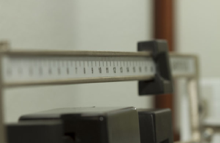

Trastorno de la conducta alimentaria no especificado
Los TCANE son habitualmente cuadros incompletos de Anorexia Nerviosa o Bulimia Nerviosa incompletos, tanto porque se encuentran en su inicio o porque están en proceso de recuperación. Por lo tanto, existen síntomas relacionados con la conducta alimentaria, pero no cumplen suficientes criterios para diagnosticar anorexia o bulimia nerviosas.
Por ejemplo, hablamos de TCANE cuando una persona presenta restricción, una bajada de peso, distorsión de la imagen corporal, pero no presenta amenorrea. Otro caso de TCANE sería el de una persona que presenta atracones y purgas, pero con una frecuencia baja y/o irregular. El hecho de que el TCANE sea un cuadro incompleto de anorexia o de bulimia no quiere decir que sea menos grave o que no necesite tratamiento.
Entre un 3% y un 5% de la población sufre un TCANE.

Actualmente los TCANE son los Trastornos de Alimentación más prevalentes en la población y los que llegan con más frecuencia a tratamiento. Es importante señalar, que a pesar de ser cuadros incompletos, ello no significa que sean menos graves o interfieran menos en la calidad de vida de la persona que los padece, por lo tanto es importante tratarlos. Entre los tipos de TCANE encontramos dos:
1. Vigorexia
2. Ortorexia
Vigorexia
En 1993, el psiquiatra estadounidense Harrison G. Pope acuñó el término vigorexia, conocido como una obsesión por tener un cuerpo musculoso. La sociedad está cambiando muy deprisa y con ello los problemas de la población. Algunos de estos cambios desfavorables implican la aparición de nuevos trastornos, como la vigorexia y la ortorexia (preocupación excesiva por ingerir sólo alimentos sanos).
La vigorexia es un trastorno mental no estrictamente alimentario, que se conoce también como complejo de Adonis. Se calcula que en México puede haber de tres a cuatro millones de afectados, sin embargo, todavía no se ha etiquetado como enfermedad. Las personas que sufren vigorexia tienen una obsesión tan grande por verse musculosas que se miran todo el rato en el espejo y nunca están satisfechas. Este sobredimensionado culto al cuerpo se manifiesta por una práctica excesiva del deporte, provocada por una obsesiva preocupación por el aspecto físico, y tiene como meta principal la obtención de una mayor masa muscular. Así, además del ejercicio, también modifican su alimentación, supeditándola a la consecución de sus objetivos. Todo ello les lleva a suprimir las grasas de la alimentación y a consumir proteínas e hidratos de carbono en exceso, con consecuencias negativas para la salud.
La vigorexia afecta sobre todo los hombres, aunque también puede darse en mujeres. La práctica de deporte moderado resulta muy saludable para el organismo. Sin embargo, los afectados por la vigorexia muestran una preocupación excesiva por el aspecto físico que conlleva que la musculación a través de una actividad física pase de ser un objetivo saludable a un desorden emocional elevado a la categoría de obsesión. Esta ansia por adquirir a toda costa una apariencia atlética puede llevar al consumo de sustancias perjudiciales para el organismo. Las consecuencias de este trastorno tienen reflejo en la salud y en la conducta social de los que lo sufren.
Podría decirse que quien sufre de vigorexia es una persona insatisfecha con su propio cuerpo que se ve demasiado delgada y busca con el ejercicio adquirir el volumen deseado. Además de la práctica desmesurada de ejercicio, esta alteración da lugar (por una serie de reacciones que se dan en nuestro organismo en el que están involucradas hormonas y neurotransmisores) a un proceso de dependencia de la realización de ejercicio físico.
Ortorexia: cuando la obsesión por comer sano se convierte en un problema
La Ortorexia es una enfermedad relacionada con los trastornos del comportamiento alimentario. La diferencia de la ortorexia con los otros trastornos alimentarios está en que, mientras en la anorexia y la bulimia el problema gira en torno a la cantidad de comida, en la ortorexia gira en torno a la calidad.
Se entiende por ortorexia la obsesión patológica por la comida biológicamente pura. Las víctimas de esta enfermedad sufren una preocupación excesiva por la comida sana, convirtiéndose en el principal objetivo de su vida. Podríamos decir que es un comportamiento obsesivo-compulsivo caracterizado por la preocupación de qué comer y la transferencia de los principales valores de la vida hacia el acto de comer, el cual hace que los afectados tengan "un menú en lugar de una vida".
Para que podamos realizar un diagnóstico de Ortorexia deben darse los siguientes criterios:
1. Pasa más de 3 horas al día pensando en su dieta sana
2. Obsesión desordenada para comer alimentos sanos (naturales).
3. Excluye de la alimentación carne, grasas y alimentos tratados con herbicidas o pesticidas.
4. Se preocupa más de la calidad de los alimentos que del placer de comerlos.
5. A medida que aumenta la psicocalidad de su alimentación disminuye su calidad de vida.
6. Nunca se salta la dieta, ni siquiera en ocasiones especiales y si lo hace se siente culpable.
7. Planifica hoy lo que comerá mañana.
8. Su manera de comer lo aísla socialmente.
Estos son algunos de los criterios para diagnosticar al paciente que padece de ortorexia. Los síntomas de la enfermedad van desde la depresión, ansiedad, hipocondrías, hipervitaminosis o en su defecto hipovitaminosis y en fases avanzadas trastornos obsesivos compulsivos respecto la alimentación.
Consecuencias
Estas patologías puede tener graves efectos sobre la salud. Por ejemplo, la supresión de grasas puede comprometer la ingesta de vitaminas liposolubles y ácidos grasos, ambos imprescindibles para el organismo. Sin carne, los niveles de hierro se desploman y, aunque los vegetales también aportan proteínas, son de calidad inferior.
También puede conllevar carencias nutricionales si el ortoréxico o vigoréxico no sustituye los alimentos que rechaza por otros que puedan aportarle los mismos complementos nutricionales. Esto se traduce en anemia, falta de vitaminas o de oligoelementos, y/o falta de energía.
Además, no sólo constituye un mal a nivel físico. A nivel psicológico también produce un trastorno que en la mayoría de los casos debe ser tratado por un especialista.
Tratamiento
Al igual que la anorexia, la bulimia y todos los trastornos alimentarios, es más costosa la recuperación psicológica que la física, ya que se deben eliminar todas las conductas que el ortoréxico o el vigoréxico ha ido adoptando a lo largo de un periodo de tiempo bastante extenso. Para empezar a tratar estos trastorno, primeramente se necesita de ayuda profesional, para que la persona afectada se de cuenta del daño que se está haciendo a si misma. Si no estás seguro de acudir con una persona especializada, puedes acudir con alguien en quien confíes, esa persona te ayudará en todo lo que necesites y ambos buscarán una solución al problema.